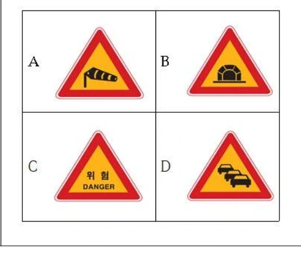

871. Biển nào sau đây không phải tiêu chuẩn về vị trí lắp đặt biển báo an toàn?

- ①Biển A được lắp ở bên phải đường, cách trước điểm có nguy cơ gió ngang 50 đến 200 mét.
- ②Biển B được lắp ở bên phải đường, cách trước cửa hầm 50 đến 200 mét.
- ③Biển C được lắp ở bên phải đường, cách trước khu vực nguy hiểm 50 đến 200 mét.
- ④Biển D được lắp ở bên phải đường, cách trước lối vào bãi đỗ xe công cộng 50 đến 200 mét. A B C D
Xem đáp án
Đáp án
④ Biển D được lắp ở bên phải đường, cách trước lối vào bãi đỗ xe công cộng 50 đến 200 mét. A B C D
Căn cứ
Biển an toàn là biển cảnh báo, quy định lắp đặt và vị trí được quy định tại [Phụ lục 6] Quy định thi hành Luật Giao thông đường bộ. Biển A bố trí bên phải đường cách điểm có nguy cơ gió ngang từ 50 đến 200 m (Biển cảnh báo số 137). Biển báo B đặt bên phải đường, cách lối vào hầm từ 50 đến 200 m (Biển cảnh báo số 138). Biển C đặt ở bên phải đường, cách khu vực nguy hiểm từ 50 đến 200 m (Biển cảnh báo số 140). Biển D đặt bên phải đường, cách đoạn thường xuyên ùn tắc từ 50 đến 200 m (Biển cảnh báo số 141).
Phần căn cứ là bản dịch máy để tham khảo.